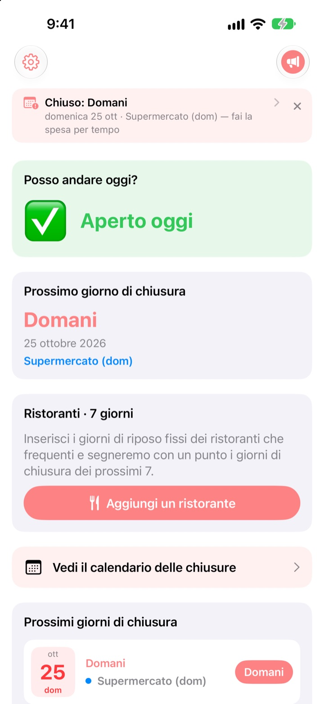
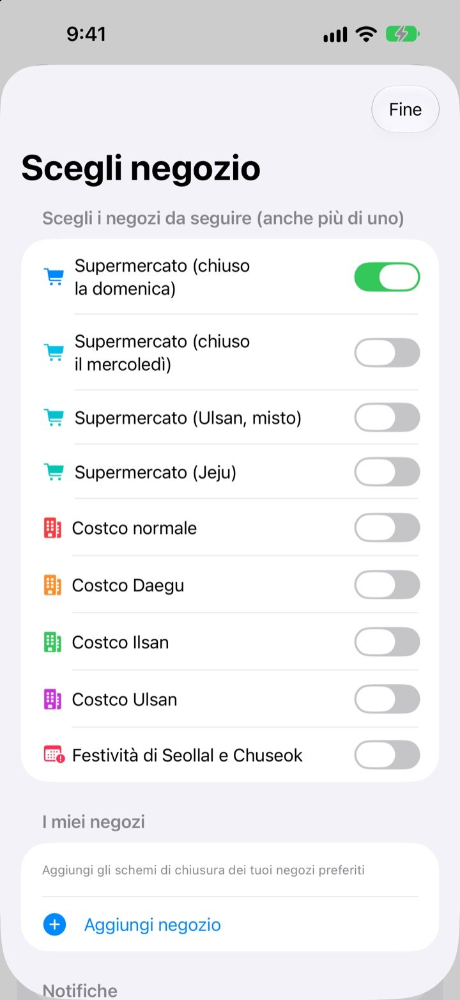
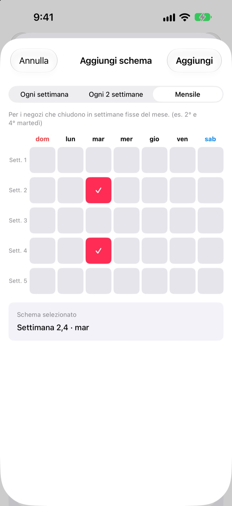
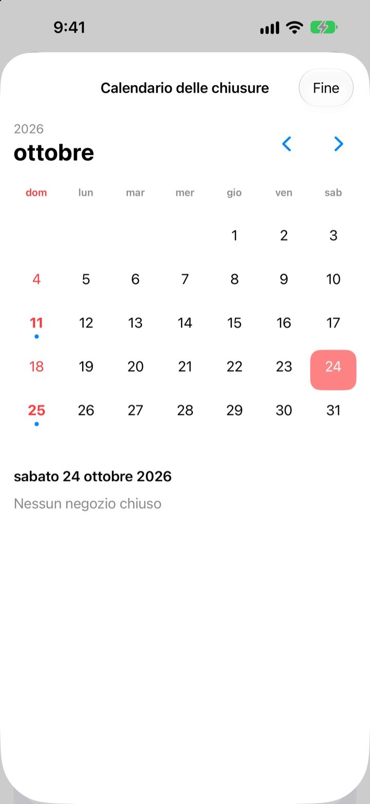
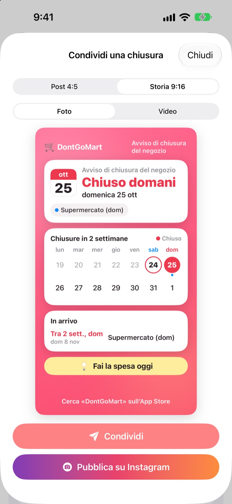

Prima di andare a fare la spesa,
controlla che sia aperto
Appena apri l’app vedi se i tuoi negozi sono aperti oggi. Prima di ogni chiusura arriva un promemoria, così non trovi più la porta chiusa.
Tutte le funzioni sono gratis. Niente account, niente pubblicità.

Prova con il tuo negozio
Scegli un negozio e vedi subito se oggi è aperto e quando chiude la prossima volta. Il calcolo segue le stesse regole dell’app.
Ti è mai capitato di arrivare con la lista della spesa e trovare chiuso?
In Corea gli ipermercati devono chiudere due giorni al mese, ma quali dipende dalla zona. Di solito sono la seconda e la quarta domenica, altrove il mercoledì, e Ulsan e Jeju hanno regole proprie. Per Costco dipende dalla sede. DontGoMart calcola le chiusure secondo le regole dei tuoi negozi e ti dice subito se oggi puoi andare.
Giusto per ogni regione
Scegli negozi che chiudono la domenica o il mercoledì, oppure regioni con un calendario proprio come Ulsan e Jeju. I magazzini Costco normali e quelli di Daegu, Ilsan e Ulsan si impostano separatamente.
Compaiono anche le chiusure nel giorno di Seollal e Chuseok, e puoi seguire più negozi insieme.

Il negozio sotto casa e i tuoi ristoranti
Se un negozio non è in elenco, aggiungilo tu: ogni settimana, a settimane alterne o in quali settimane del mese e in che giorno chiude.
Per un ristorante incolla un link condiviso da Naver Map o scegli uno screenshot della sua scheda, e i giorni di riposo si compilano da soli. Il testo delle foto viene letto solo sul dispositivo.

Promemoria e widget per non dimenticare
Ricevi un avviso 1, 2, 3 o 7 giorni prima all’ora che preferisci, e un altro la vigilia per ricordarti che oggi è il giorno giusto per la spesa.
I widget della schermata Home e di blocco mostrano la prossima chiusura, se questa domenica è aperto e i prossimi sette giorni dei tuoi ristoranti. Il calendario mostra un mese intero.

Condividilo con una sola scheda
Trasforma l’avviso in una scheda con un calendario di due settimane e un consiglio per la spesa, e mandala nella chat di famiglia. Ci sono i formati per post e storia di Instagram, e il video breve.

Si comincia in tre passi
- 1
Scegli i negozi
Attiva i negozi e le regioni dove fai la spesa. Quanti vuoi.
- 2
Attiva i promemoria
Scegli quanti giorni prima e a che ora.
- 3
Aggiungi un widget
Controlla dalla schermata Home o di blocco senza aprire l’app.
Regole di chiusura per negozio
- Supermercato (chiuso la domenica)
- 2ª e 4ª domenica · quasi tutte le regioni
- Supermercato (chiuso il mercoledì)
- 2° e 4° mercoledì · parte del Gyeonggi, Cheongju
- Supermercato (Ulsan)
- 2° mercoledì, 4ª domenica
- Supermercato (Jeju)
- 2° venerdì, 4° sabato
- Costco normale
- 2ª e 4ª domenica
- Costco Daegu
- 2° e 4° lunedì · Daegu, Daegu Innovation
- Costco Ilsan
- 2° e 4° mercoledì
- Costco Ulsan
- 2° mercoledì, 4ª domenica
- Seollal, Chuseok
- chiuso il giorno stesso
Le chiusure obbligatorie sono decise dalle amministrazioni locali e possono cambiare. Se qualcosa non torna, scrivici all’indirizzo qui sotto.
Domande frequenti
I giorni di chiusura non corrispondono alla realtà.
Le chiusure obbligatorie dipendono da regolamenti locali e cambiano da zona a zona. Controlla in Impostazioni di aver scelto il tipo di negozio giusto (chiuso la domenica, il mercoledì, Ulsan, Jeju e così via). Se ancora non torna, mandaci nome del negozio e zona e verificheremo.
Il mio negozio non è in elenco.
Aggiungilo come negozio tuo. Scegli ogni settimana, a settimane alterne o in quali settimane del mese e in che giorno chiude, per esempio la seconda e la quarta domenica.
I giorni di riposo di un ristorante non sono corretti.
Importando da un link di Naver Map, la scheda del ristorante deve riportare i giorni di riposo. Con uno screenshot, assicurati che la scritta sulla chiusura sia visibile. Puoi correggere tutto prima di salvare.
Non ricevo i promemoria.
Controlla che le notifiche siano consentite in Impostazioni > Notifiche > DontGoMart e che i promemoria siano attivi nell’app.
Il widget non si aggiorna.
Basta aprire l’app una volta per aggiornare i widget. Se resta uguale, rimuovi il widget e aggiungilo di nuovo.
Cosa sono le mance?
Tutte le funzioni di DontGoMart sono gratis. Le mance caffè, torta e pasto servono a sostenere lo sviluppatore. Dopo ricevi un ringraziamento e un badge con il numero di mance inviate.
A chi chiedo per pagamenti o rimborsi?
Gli acquisti in-app sono gestiti da Apple, quindi i rimborsi si chiedono su reportaproblem.apple.com. Per tutto il resto, scrivici.
Come vengono trattati i miei dati?
Niente account, pubblicità o strumenti di tracciamento, e il testo degli screenshot viene letto solo sul dispositivo. Dettagli nell’informativa sulla privacy qui sotto.
Domande o idee? Scrivi a hyunho.lee.1993@gmail.com. Di solito rispondiamo entro uno o due giorni.